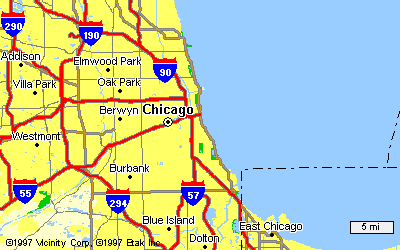

leaving chicago
by the time I had reached
the second toll plaza
Courtney Love
had faded to static.
I could still smell the city
through my open window.
I paid exact change
accepted a bright plastic thank you
and drove into white noise.
snow was beginning to appear on the shoulder
afraid of the city
perfectly at ease in the suburbs
mariachi station wagons
replaced with eighteen-wheelers.
one of them blew past me
while I gripped the wheel with both hands
wishing I'd had a rocket launcher.
too many miles of this.
too many miles between us.
the grey sky was already suffocating
the lavender fragrance I left behind.
I turned off the radio
and daydreamed
riding the steam
of your jasmine tea
away from Chicago.
Paul David Mena
28 January, 1996
Stillwater, MN

 back to my poetry page
back to my poetry page